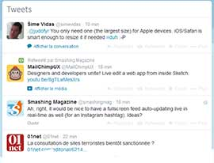
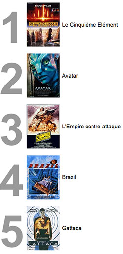
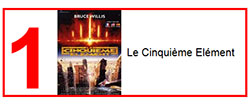
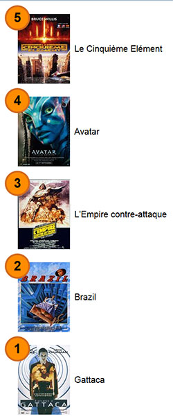
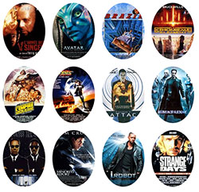

Après avoir été preque totalement abandonnées, les listes sont
devenues très présentes dans les pages HTML.
Beaucoup de regroupements sont désormais considérés comme des listes,
en particulier les regroupements de liens (barre de navigation, liens
dans les hors-textes latéreaux ou les pieds de page) et les vignettes
photos. On voit même parfois des formulaires de saisie considérés
comme des listes de zones de saisie.
Les spécifications pour les listes sont définies dans la version 2.1 des CSS et quelques modifications
mineures sont en discution pour la version 3.
Propriétés de liste
Il n'y a que 4 propriétés concernant
directement les listes :
list-style-type
définit le type de puce ou de numérotation de la ligne de la liste,
list-style-image
définit une image à utiliser comme puce de la ligne,
list-style
est un raccourci pour les 3 propriétés précédentes. C'est cette
propriété qui est la plus souvent utilisée.
Types de puce
Tester les types de puce
Position de la puce
L'exemple suivant montre les 2 positions possibles pour la puce :
en dehors de la ligne (par défaut) ou à l'intérieur de la ligne.
Une bordre rouge est mise sur le côté gauche des lignes pour bien
montrer le positionnement.
Image comme puce
On peut utiliser n'importe quelle image pour remplacer les
puces par défaut des lignes d'une liste.
Listes avec images et textes
Une forme de liste très souvent utilisée mélange une image sur
la gauche et du texte en vis à vis à droite. C'est le type de liste
que l'on trouve par exemple sur Facebook ou Twitter.

liste dans twitterliste dans facebook
Top 5

liste à réaliser

ligne au survol de la souris
Complétez le code HTML
et le code CSS pour
obtenir le résultat ci-contre.
Vous pouvez classer les films comme vous
désirez. Les images ont toutes la même dimension : 120 pixels de
large et 160 pixels de haut. Les correspondances avec les films
sont :
Le Cinquième Element ../exemples/img/hit_element.jpg
L'exercice précédent montre qu'il n'est pas
facile de styler le numéro de ligne d'une liste numérotée. Si on
veut avoir un compteur automatique, il est possible d'utiliser deux
propriétés un peu particulières :
counter-reset
permet d'initialiser un compteur que l'on nomme à notre convenance
et que l'on peut initialiser avec n'importe quelle valeur entière
(éventuellement différente de 0, la valeur par défaut) : counter-reset: mon_compteur; counter-reset:
autre_compteur 10;
counter-increment
incrémente automatiquement le compteur précédemment initialisé : counter-increment: mon_compteur; Il est
possible de donner la valeur de l'incrément (1 par défaut). Cette
valeur doit être un entier : counter-increment:
autre_compteur 5;
Pour récupèrer le numéro de la ligne en cours on utilise la fonction
counter() dont le paramètre est le nom d'un compteur.
Une fois que l'on a le numéro de la ligne, on peut l'afficher avec
le pseudo élément
::before et sa propriété content
L'exemple suivant reprend l'exercice sur le top 5 des films en
utilisant la technique des compteurs.
On pourra noter que le code HTML
est simplifié (disparition des numéros et des paragraphes).
Top 5 inversé

liste à réaliser
Complétez le code CSS
pour obtenir le résultat ci-contre.
Vous pouvez classer les films comme vous désirez, l'important
étant de commencer par le cinquième et de finir par le premier. Les
images ont toutes la même dimension : 120 pixels de large et 160
pixels de haut.
Le rayon des boîtes des numéros est de 50 pixels. Le bord est de 4
pixel, couleur chocolate. Le fond est darkorange.
La police est Helvetica ou Verdana, gras, 30 pixels.
Au survol de la souris, la couleur du numéro change (white),
ainsi que le fond (firebrick) et la bordure (orangered).
Un halo est ajouté avec rgba(255, 69, 0, 0.8).
Il arrive souvent que les lignes des listes soient utilisées en
positionnement flottant (float: left ou float:
right) par exemple pour faire des listes horizontales (menu) ou des
listes de vignettes photos.
Nous verrons en détail page suivante comment réaliser des menus avec
les listes et nous allons ici montrer un exemple de présentation de
vignettes.
Vignettes flottantes

liste à réaliser
Complétez le code CSS
pour obtenir le résultat ci-contre.
Les images ont toutes la même dimension : 120 pixels de large
et 160 pixels de haut. Par défaut elles sont affichées tronquées
dans un ovale.
Au survol de la souris, l'image est affichée complétement. Le titre
du film est lui aussi affiché dans une boîte placée à 10 pixels du
bord inférieur de l'image. Le titre est récupéré dans l'attribut data-titre
des lignes de la liste. Une ombre est ajoutée tout autour de
l'image.